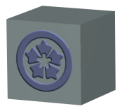

Displacement
Displacement uses a bump map to create an 'engraved' effect for a decal.
When the Displacement check box is selected you can control the Amplitude and Softness of the displacement.
Amplitude: controls the differences between peaks and troughs of the bump map; negative values will reverse its direction.
|
 Amplitude = 1 |
Amplitude = –1 |

Softness: controls degree of depth of the engraving.
|
Note |
The quality of 'engraving' is dependent on the sharpness (resolution) of the image used. |